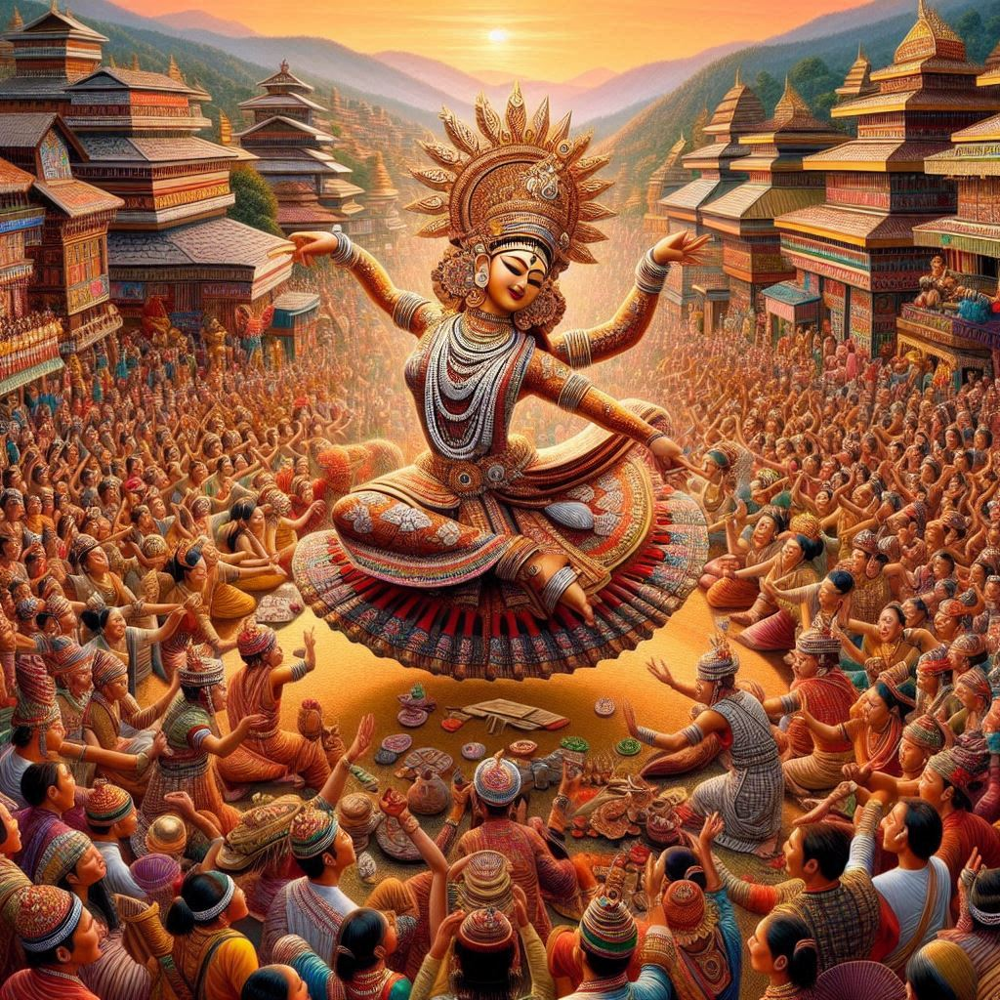
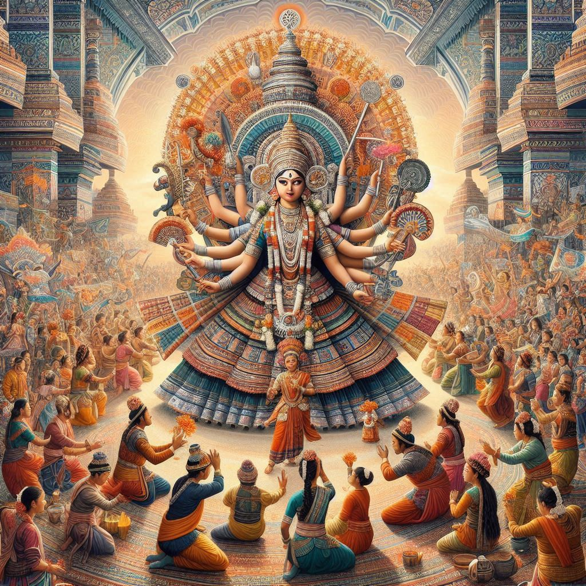

The traditions of Manipur are deeply rooted in its history, culture, and the indigenous way of life of its people. These traditions, which have been passed down through generations, play a significant role in shaping the identity of the state. Here’s an overview of some of the key traditions of Manipur:
1. Manipuri Dance
Manipuri dance is one of the oldest and most graceful classical dance forms in India. It is known for its fluid movements, graceful gestures, and colorful costumes.
The dance is deeply influenced by the religious and cultural practices of the region, with themes drawn from Hindu mythology, particularly stories of Lord Krishna and Radha. The Raas Leela dance, portraying the love story of Radha and Krishna, is one of the most famous performances.
2. Rituals and Festivals
Festivals are an integral part of Manipur's cultural life. The Yaoshang Festival (similar to Holi) is one of the most widely celebrated festivals. It marks the arrival of spring and is a time for families to come together, play with colors, and celebrate the joyous occasion.
The Lai Haraoba Festival is another significant tradition of Manipur, especially for the Meitei people. It is a ritualistic celebration to honor the tribal deities and is performed with traditional songs, dances, and prayers.
Ningol Chakouba is a family-oriented festival celebrated by the Meitei people, where married women are invited to their parental homes and honored with a grand feast.
3. Traditional Clothing
The traditional dress of the people of Manipur is a significant cultural symbol. The Meitei women wear a Phanek (a woven skirt) along with a Innaphi (a shawl), while the men wear Pheijom (a cloth wrapped around the waist) and Phanek.
Tribal communities such as the Tangkhuls, Thadous, and Mizos have their distinct attire, often made from woven cotton or wool, decorated with intricate embroidery.
4. Handicrafts and Weaving
Manipur is known for its handwoven textiles. The state’s traditional Meitei handloom and tribal weaving techniques have produced exquisite fabrics such as Phanek, Rani (saree), and shawls. These handwoven items are often adorned with unique patterns and designs.
Manipur's bamboo crafts are also well-known, with bamboo baskets, mats, and decorative items being crafted by local artisans.


5. Traditional Music and Instruments
The people of Manipur are passionate about music, and their traditional music reflects the region’s cultural diversity. The dhol, pung (drum), penjing, and sitar are some traditional musical instruments played during festivals, rituals, and dances.
Manipuri folk music is primarily devotional and is deeply tied to the state's religious festivals, especially those dedicated to Lord Vishnu and Shiva.
6. Religion and Beliefs
Religion plays a central role in the traditions of Manipur. The majority of the population follows Hinduism, especially the Meitei people. Many of the state’s festivals, dances, and rituals are connected to Hindu mythology and deities.
Apart from Hinduism, several tribal communities in the hill regions practice Christianity, Animism, and traditional belief systems, which influence their customs and festivals.
7. Cuisine and Food Traditions
Manipur’s cuisine is deeply influenced by its culture and natural resources. Rice is the staple food, and it is commonly accompanied by vegetable curries, fish, and fermented foods like Nga-thongba (fish curry) and Aloo Wadi (potato curry).
Manipuri people also have unique snacks, such as Chak-hao Kheer (a sweet dish made from black rice) and Eromba (a spicy mix of vegetables and fish).
8. Art and Literature
Manipur has a rich tradition of arts and literature, with a strong emphasis on poetry and storytelling. Manipuri literature, written in the Meitei script, is an important part of the state’s cultural heritage, with significant works in poetry, epics, and folklore.
Manipuri painting, especially the paintings depicting traditional rituals, dance forms, and religious themes, reflects the culture of the state.
9. Cultural Unity Among Diverse Communities
While there are distinct tribal and non-tribal communities in Manipur, the state’s culture emphasizes the unity and harmony among the people, irrespective of differences in traditions, languages, and religious beliefs. The state celebrates unity in diversity, with each community contributing its unique practices and customs to the cultural fabric of the region.
Conclusion:
The traditions of Manipur are rich, diverse, and deeply intertwined with the natural beauty and history of the region. From its dance forms and festivals to its crafts, music, and culinary practices, the cultural heritage of Manipur offers a glimpse into the vibrant and unique way of life that has been preserved over centuries.